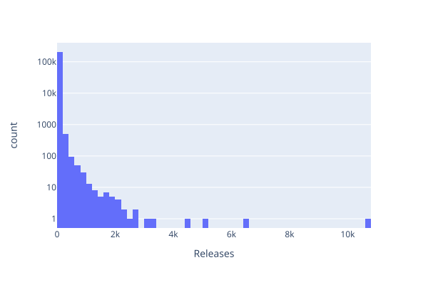
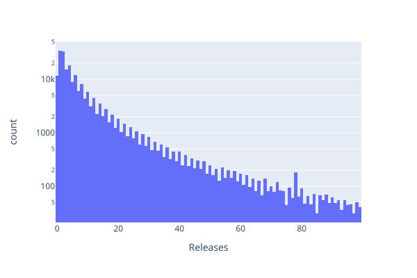

Chapter 3: Robust Analysis
DRAFT
- Use the `requests` package to get data from the web.
- Build logging and restart into programs that may take a long time or experience outages.
- Use mean, median, variance, and standard deviation to describe properties of data.
- Use histograms, violin plots, and box-and-whisker plots to visualize the properties of data.
- Create a Git repository for each analysis project.
- Put runnable programs in the `bin` directory.
- Put raw data in the `data` directory.
- Put results and figures in the `results` and `figures` directories.
- Put documentation and manuscripts in the `doc` directory.
- Use filenames that can easily be matched with shell wildcards.
- Put `MANIFEST.yml` files in the `data` and `results` directories to describe each data file.
- Use a build tool like Make to track file dependencies and re-run commands when necessary.
Terms defined: bin, box-and-whisker plot, build prerequisite, build rule, build target, build tool, data manifest, descriptive statistics, docstring, escape character, gzip, interquartile range, ISO date format, main driver, mean, median, Noble's Rules, Not Available, quartile, regular expression, standard deviation, tar, Taschuk's Rules, throttle, tidy data, variance, violin plot, wheel
- The steps in most data analysis projects are:
- Find data
- Collect it
- Tidy it
- Do calculations
- Report results
- How can we make all of this easier to understand, reproduce, and extend?
- To illustrate, let’s find out how many versions of Python packages there are
Section 3.1: Getting Data
- Data source is simple PyPI package index page https://pypi.org/simple/
- Has HTML links to one page per package
- Each package’s page has links to released versions in various formats
- 205K entries in total
- Some redundancy, e.g., wheels and gzip’d tar files
- We have to decide whether to count these separately or fold them together
- Every statistical result is the product of many decisions
- Different decisions produce different results
- Use the
requestslibrary to get page - HTML is very highly structured,
so we can get away with using regular expressions to extract fields
- This is a sin
- Look at better ways in an exercise
import sys
import requests
import re
import time
# Match package URL in main index page.
RE_PACKAGE = re.compile(r'<a href="(.+?)">')
# Match release URL in package index page.
RE_RELEASE = re.compile(r'<a href=".+?">(.+?)</a>')
# PyPI domain.
DOMAIN = 'https://pypi.org'
index_response = requests.get(f'{DOMAIN}/simple/')
print('Package,Releases')
all_packages = RE_PACKAGE.findall(index_response.text)
for package in all_packages:
name = package.strip('/').split('/')[-1]
url = f'{DOMAIN}{package}'
package_response = requests.get(url)
count = len(RE_RELEASE.findall(package_response.text))
print(f'{name},{count}')
- First run crashed after a few minutes because of a missing sub-page
- So add a check on the HTTP status codes from queries
- Record
NAfor those pages - And hope that analysis software interprets this as “not available” rather than Namibia or the element sodium
- Record
- Add some logging so that we can tell how long the program is going to take to run
- About 30K seconds, or 8.5 hours
import sys
import requests
import re
import time
# Match package URL in main index page.
RE_PACKAGE = re.compile(r'<a href="(.+?)">')
# Match release URL in package index page.
RE_RELEASE = re.compile(r'<a href=".+?">(.+?)</a>')
# PyPI domain.
DOMAIN = 'https://pypi.org'
# Get main index page.
index_response = requests.get(f'{DOMAIN}/simple/')
assert index_response.status_code == 200, \
f'Unexpected status for index page {index_response.status_code}'
# Get sub-pages and count releases in each.
num_seen = 0
t_start = time.time()
print('Package,Releases')
all_packages = RE_PACKAGE.findall(index_response.text)
for package in all_packages:
name = package.strip('/').split('/')[-1]
url = f'{DOMAIN}{package}'
package_response = requests.get(url)
if package_response.status_code != 200:
print(f'Unexpected status for package page {url}: {package_response.status_code}',
file=sys.stderr)
count = 'NA'
else:
count = len(RE_RELEASE.findall(package_response.text))
print(f'{name},{count}')
num_seen += 1
if (num_seen % 10) == 0:
t_elapsed = time.time() - t_start
t_expected = len(all_packages) * t_elapsed / num_seen
print(f'{num_seen} @ {t_elapsed:.1f} / {len(all_packages)} @ {t_expected:.1f}',
file=sys.stderr)
- Still not a friendly program
- If several thousand people run this program at the same time it will slow PyPI down
- Unlikely in this case, but a school could easily wind up being blacklisted if a hundred students are grabbing data at the same time
- Popular data sources have to manage floods of requests
- Programs should throttle their own activity
Section 3.2: Reporting
- Descriptive statistics are key facts about data
- The median is the middle value
- If \(N\) is odd, sort and take the middle
- If \(N\) is even, sort and average the two middle values
- The mean is the weighted center of the data
- \( \mu = \frac{1}{N} \sum x_i \)
- If there are a few outliers, the mean can be very different from the median
- Mean of
[1, 2, 3, 4, 100]is 22, but median is 3 - Which is why those who have like to quote means rather than medians
- Mean of
- Variance measures the spread of values
- \( \sigma^2 = \frac{1}{N} \sigma (x_i - \mu)^2 \)
- Squaring the differences gives extra weight to outliers…
- …but makes variance hard to use directly, since its units are (for example) lines squared
- Instead, use the standard deviation
- Square root of the variance, so it has the same units as the data
import sys
import pandas as pd
datafile = sys.argv[1]
packages = pd.read_csv(datafile)
print(packages.agg(['mean', 'median', 'var', 'std', 'min', 'max']))
python version-statistics.py release-count.csv
Releases
mean 11.236351
median 4.000000
var 2501.398099
std 50.013979
min 0.000000
max 10797.000000
- Half of all packages have had fewer than four releases
- The mean is only slightly higher (1/5 of a standard deviation)
- And yeah, a package with almost 11,000 releases will pull things up
ccxtis a cryptocurrency, so they might be using releases as ledger updates
Section 3.3: Plotting
- Again, a histogram shows the distribution of values
- Its shape (and hence our interpretation) depends on how we bin the data
- Given how long data collection takes,
most sensible thing is to collect the data once and write separate plotting programs to view it
- Provide name of data file on the command line
import sys
import pandas as pd
import plotly.express as px
datafile = sys.argv[1]
packages = pd.read_csv(datafile)
print('Distribution of Releases')
print(packages.groupby('Releases').count())
print(f'{packages["Releases"].isna().sum()} missing values')
fig = px.histogram(packages, x='Releases', nbins=100, log_y=True, width=600, height=400)
fig.show()
fig.write_image('figures/release-count.svg')
python version-histogram.py release-count.csv
Distribution of Releases
Package
Releases
0.0 11721
1.0 33992
2.0 32829
3.0 14999
4.0 18339
5.0 8946
...
4505.0 1
5133.0 1
6460.0 1
10797.0 1
[561 rows x 1 columns]
14 missing values

- Printed output includes the value for packages with zero releases
- But does the histogram?
- What does Plotly do with
log(0)?
- What does Plotly do with
- Let’s try:
slice = packages[packages['Releases'] < 100]
fig = px.histogram(slice, x='Releases', nbins=100, log_y=True, width=600, height=400)
fig.show()
fig.write_image('figures/release-count-low.svg')

- It seems to include zero
- But that double-stepping looks weird
-
Is it a plotting artifact or a result of double-counting packages that are released in multiple formats?
- For that, we need better data
-
Use a violin plot to get a feel for the shape of the data
import sys
import pandas as pd
import plotly.express as px
datafile = sys.argv[1]
packages = pd.read_csv(datafile)
slice = packages[packages['Releases'] < 100]
fig = px.violin(slice, y='Releases')
fig.show()
fig.write_image('figures/release-count-violin.svg', width=600, height=400)

- Can also use a box-and-whisker plot
- Lines show minimum, first quartile, median, third quartile, and maximum
- Box shows first quartile to third quartile (so half the data lies inside the box)
- Distance from first quartile to third quartile is the inter-quartile range
- Lower and upper lines cut off at 1.5\(\times\)IQR
- Anything beyond that is considered an outlier and shown as a point
fig = px.box(slice, y='Releases')
fig.show()
fig.write_image('figures/release-count-box.svg', width=600, height=400)

Section 3.4: Structuring Data Analysis Projects
- Data analysis projects include programs and programming, but are not the same as software development projects
- Starting point is Taschuk’s Rules:
- Use version control.
- Document your code and usage
- Make common operations easy to control.
- Version your releases.
- Reuse software (within reason)
- Rely on build tools and package managers for installation.
- Do not require root or other special privileges to install or run.
- Eliminate hard-coded paths.
- Include a small test set that can be run to ensure the software is actually working.
- Produce identical results when given identical inputs.
- The first three rules are the most important
- We assume you are already using version control
- Restructure our program
Main driver
- The main driver lays out the overall flow of the program
- Parse command-line options
- Set up
- Produce output incrementally while processing data (rather than read-process-write)
- Include a docstring for help
def main():
'''
Main driver.
'''
args = parse_args()
all_packages = get_package_list(args)
progress = initialize_progress(args, all_packages)
writer = csv.writer(sys.stdout, lineterminator='\n')
writer.writerow(['Package', 'Release'])
for package in all_packages:
get_package_info(package, writer)
report_progress(progress)
# ...
if __name__ == '__main__':
main()
- Uses the
csvpackage to format output instead of printing strings ourselves- Takes care of escaping special characters
Parse command-line arguments
def parse_args():
'''
Parse command-line arguments.
'''
parser = argparse.ArgumentParser()
parser.add_argument('--restart', type=str, help='restart from this package')
parser.add_argument('--verbose', action='store_true', help='show progress')
return parser.parse_args()
- Use
argparseto parse command-line arguments--verboseto track progress (because it takes hours)--restartto start from a specified point because networks fail- May result in redundant records
- Definitely results in header appearing multiple times
- Clean up afterward
Get the main package list
# Match package URL in main index page.
RE_PACKAGE = re.compile(r'<a href="(.+?)">')
# ...
def get_package_list(args):
'''
Get main package listing page and extract values.
'''
response = requests.get(f'{BASE_URL}')
assert response.status_code == 200, \
f'Unexpected status for index page {response.status_code}'
all_packages = RE_PACKAGE.findall(response.text)
all_packages = [p.strip('/').split('/')[-1] for p in all_packages]
if (args.restart):
start = all_packages.index(args.restart)
if (start < 0):
print(f'Unable to find {args.restart} in package list',
file=sys.stderr)
sys.exit(1)
all_packages = all_packages[start:]
return all_packages
- Regular expression is at the top of the file with other “constants”
- Unfortunately no way to attach a docstring
- Get the main package listing page
- Fail if it can’t be found rather than supporting restart
- Slice here to get the package list
- Handle restart here as well (and fail if that isn’t going to work)
- Use
all_packagesrather than justpackagesas a name so that the code reads aloud more clearly- Look at consistent variable naming in the exercises
Get information about a single package
def get_package_info(name, writer):
'''
Get and print information about a specific package.
'''
url = f'{BASE_URL}{name}'
response = requests.get(url)
if response.status_code != 200:
print(f'Unexpected status for package page {url}: {response.status_code}',
file=sys.stderr)
writer.writerow([name, 'NA'])
else:
all_releases = RE_RELEASE.findall(response.text)
for release in all_releases:
writer.writerow([name, release])
- Get packages one at a time
- Some attempts fail (status code is not 200)
- Record these as
NArather than failing because we can proceed
Report progress
- Anything that takes long enough to worry about should tell users it’s OK
- But that should be an option so that it doesn’t ask for attention in a production pipeline
- Could initialize the record-keeping in
main, but that function reads more cleanly if this low-level detail is hidden away - Goes to
sys.stderrso that regular output can be redirected to file
def initialize_progress(args, packages):
'''
Initialize record keeping for progress monitoring.
'''
return {
'report': args.verbose,
'start': time.time(),
'expected': len(packages),
'seen': 0
}
def report_progress(progress):
'''
Report progress, updating the progress record as a side effect.
'''
if (not progress['report']):
return
progress['seen'] += 1
if (progress['seen'] % 10) == 0:
elapsed = time.time() - progress['start']
duration = progress['expected'] * elapsed / progress['seen']
print(f"{progress['seen']} @ {elapsed:.1f} / {progress['expected']} @ {duration:.1f}",
file=sys.stderr)
What’s missing
- This program does not have an option for output file
- Should probably have one option to create a new file and another to append to an existing file
- Should probably also have an option to stop trying if enough pages fail
Section 3.5: What Goes Where
Noble’s Rules are a way to organize small data analysis projects. Each one lives in a separate Git repository whose subdirectories are organized by purpose:
-
src(short for “source”) holds source code for programs written in languages like C or C++ that need to be compiled. Many projects don’t have this directory because all of their code is written in languages that don’t need compilation. -
Runnable programs go in
bin(an old Unix abbreviation for “binary”, meaning “not text”). This includes the compiled and runnable versions of C and C++ programs, and also shell scripts, Python or R programs, and everything else that can be executed. -
Raw data goes in in
dataand is never modified after being stored. -
Results are put in
results. This includes cleaned-up data and everything else that can be rebuilt using what’s inbinanddata. If intermediate results can be re-created quickly and easily, they might not be stored in version control, but anything that is included in a report should be here. -
Finally, documentation and manuscripts go in
doc.
Documentation is often generated from source code,
and it’s usually a bad idea to mix handwritten and machine-generated files,
so most projects now use separate subdirectories for software documentation (doc)
and reports (reports or papers).
People also often create a figures directory to hold generated figures
rather than putting them in results.
The directories in the top level of each project are organized by purpose,
but the directories within data and results are organized chronologically
so that it’s easy to see when data was gathered and when results were generated.
These directories all have names in ISO date format like YYYY-MM-DD
to make it easy to sort them chronologically.
This naming is particularly helpful when data and results are used in several reports.
At all levels,
filenames should be easy to match with simple patterns.
For example,
a project might use speciesorgantreatment.csv
as a file-naming convention,
giving filenames like human_kidney_cm200.csv.
This allows human_*_cm200.csv to match all human organs
or *_kidney_*.csv to match all kidney data.
It does produce long filenames,
but tab completion means you only have to type them once.
Long filenames are just as easy to match in programs:
Python’s glob module will take a pattern and return a list of matching filenames.
Section 3.6: Tracking Data
- Data should be published along with reports
- How else can people check or extend your work?
- Large datasets that are archived and maintained by trusted institutions (e.g., open government data)
don’t need to be stored
- Just include a link, a method for downloading, and a date
- If a report involves a new dataset:
- Always use tidy data.
- Include keywords describing the data in the project’s
README.mdso that they appear on its home page and can easily be found by search engines. - Give every dataset and every report a unique identifier.
- Use well-known formats like CSV and HDF5.
- Include an explicit license.
- Include units and other metadata.
The last point is often the hardest for people to implement, since many researchers have never seen a well-documented dataset. The data manifest for Diehm2018 is a good example; each dataset is described by an entry like this:
- What is this?: This file contains all of the measurements for 80 pairs of blue jeans from the most popular and widely available brands in the US.
- Source(s): All data was collected from manual measurements by Jan Diehm and Amber Thomas at brick and mortar stores in Nashville, New York, and Seattle. All measurements of front pockets were taken of the right-hand-side front pocket of empty jeans.
- Last Modified: August 13, 2018
- Contact Information: Amber Thomas
- Spatial Applicability: United States
- Temporal Applicability: All measurements were collected between June 29 and August 6, 2018
- Observations (Rows): Each row represents data from a single pair of jeans.
- Variables (Columns):
| Header | Datatype | Description |
|---|---|---|
brand |
text | The full brand name. |
style |
text | The cut of each pair of jeans (in our analysis, we combined straight and boot-cut styles and skinny and slim styles, but these remain separated here). |
menWomen |
text | Whether the jeans were listed as “men’s” or “women’s“. |
name |
text | The name of the specific style of measured pair of jeans as indicated by the tag. (e.g., Fave Super Skinny Jean). |
brandSize |
text | The size of jeans we measured. Each size reflects the sizing for each brand closest to a 32-inch waistband as indicated by the brand’s website. |
waistSize |
number | The waistband size (in inches) of each measured pair as reported on the brand’s website. |
| … | … | … |
FAIR play
The FAIR Principles Brock2019 state that data should be findable, accessible, interoperable, and reusable. They are still aspirational for most researchers, but they tell us what to aim for.
Section 3.7: Workflow
It’s easy to run one program to process a single data file, but what happens when our analysis depends on many files, or when we need to re-do the analysis every time new data arrives? What should we do if the analysis has several steps that we have to do in a particular order?
If we try to keep track of this ourselves, we will inevitably forget some crucial steps, and it will be hard for other people to pick up our work. Instead, we should use a build tool to keep track of what depends on what and run our analysis programs automatically. These tools were invented to help programmers rebuild complex software, but can be used to automate any workflow.
Make
The first widely-used build tool, Make, written in 1976. Programmers have created many replacements for it in the decades since then—so many, in fact, that none have attracted enough users to displace it entirely.
When Snakemake runs,
it reads build rules from a file called Snakefile.
(It can be called other things, but that’s the convention.)
Each rule explains how to update a target
if it is out of date compared to any of its prerequisites.
Here’s a rule to regenerate a compressed data file data/all-versions.csv.gz
if the file is older than the script used to create it:
rule all_versions:
'''Download all version info from PyPI - takes several hours.'''
output:
protected('data/all-versions.csv.gz')
shell:
'''
python bin/get-all-versions.py > data/all-versions.csv
gzip data/all-versions.csv
'''
- First line gives the rule a meaningful name
- Second is a docstring
snakemake --listwill show the rules and their docstrings
outputsection tells Snakemake what file(s) this rule produces- The
protectedfunction tells Snakemake to change permissions on the file so it won’t accidentally be deleted - Only do this for files that take a long time to re-create
- The
shellsection tells Snakemake what command(s) to run to create the output- It will automatically create the
datadirectory if need be - We can put Python directly in the Snakefile, but I prefer scripts so that commands can be re-run independently
- It will automatically create the
Compressing Data
Compressing this dataset takes file from 103.8 Mbyte to 9.5 Mbyte, which is almost a factor of 11. However, version control can only diff and merge plain text files, so if the file is compressed, Git can’t help us track changes to individual lines. On the other hand we probably shouldn’t be changing a dataset anyway…
- Execute these commands with
snakemake -j 1 all_versions
Since that will take several hours to complete, let’s add another rule to the same file:
rule releases_per_package:
'''How many releases are there for each package?'''
input:
'data/all-versions.csv.gz'
output:
'results/releases.csv'
shell:
'python bin/count-releases.py {input} > {output}'
-j1means “only run one job at a time”- Snakemake can run many jobs in parallel
results/releases.csvdepends on an input data file- Snakemake only runs the commands if the output doesn’t exist or is older than the input
count-releases.py is only a few lines long.
It takes advantage of the fact that if we give Pandas’ read_csv function
a string instead of a stream
it assumes that parameter is a filename,
and that it can read directly from compressed files
(which it identifies by looking for common endings like .zip or .gz).
# !/usr/bin/env python
'''
Count how many releases there are per package.
'''
import sys
import pandas as pd
def main():
'''
Main driver.
'''
data = pd.read_csv(sys.argv[1])
result = data.groupby('Package').Release.nunique()
result.to_csv(sys.stdout, header=True)
if __name__ == '__main__':
main()
If we run:
snakemake -j1 releases_per_package
and wait a few seconds, we have a file with the following:
Package,Release
0,1
0-0-1,1
0-core-client,9
0-orchestrator,14
00print-lol,2
01d61084-d29e-11e9-96d1-7c5cf84ffe8e,2
021,1
...
Creating a Snakefile may seem like extra work, but few things in life are as satisfying as running one command and watching an entire multi-step analysis run itself:
-
It reduces errors, since we only have to type commands correctly once instead of over and over again.
-
More importantly, it documents our workflow so that someone else (including our future self) can see exactly what steps we used in what order.
Section 3.8: Removing Redundant Releases
- How many packages are released in redundant formats (e.g., as both
.tar.gzand.whl)? - First step is to find out what formats are represented in the data
- Break names on
. - Count how often each type of field appears
- Break names on
# !/usr/bin/env python
import sys
import pandas as pd
from collections import Counter
def main():
'''
Count frequency of '.'-separated components of names.
'''
data = pd.read_csv(sys.argv[1])
data = data['Release'].str.split('.', expand=True)
data = data.values.flatten()
data = Counter(data)
del data[None]
data = pd.DataFrame.from_dict(data, orient='index').reset_index()
data = data.rename(columns={'index': 'Component', 0: 'Count'})
data = data[~ data['Component'].str.match(r'^\d+$', na=False)]
data = data.sort_values(by='Count', ascending=False)
data.to_csv(sys.stdout, header=True, index=False)
if __name__ == '__main__':
main()
-
In order:
- Read the file
- Split the
Releasecolumn on., creating new columns for the fragments - Flatten all those columns into a single vector
- Count how often each component appears
- Remove the
Nonevalue (because splitting on.created a lot of blanks) - Turn the result back into a dataframe and reset the index
- We explore why we need to reset the index in the exercises
- Give the columns sensible names
- Keep values that aren’t composed entirely of digits (after inspection)
- Sort by count
- Save
-
We did not write this all at once
- Write the first couple of steps
gunzip -c data/all-versions.csv | head -n 10 > /tmp/test-data.csv.gzto create a test dataset- Keep adding steps
- Enlarge the test set once the pipeline seems to be working
-
Add a rule to
Snakefile
rule count_name_components:
'''How often does each component of a dotted name occur?'''
input:
'data/all-versions.csv.gz'
output:
'results/name-component-count.csv'
shell:
'python bin/components.py {input} > {output}'
- Run
Component,Count
tar,1298365
gz,1294773
whl,833181
py3-none-any,219230
egg,83174
zip,79232
0-py2,56429
0-py3-none-any,53955
1-py3-none-any,46384
1-py2,42507
2-py3-none-any,29974
2-py2,27282
3-py3-none-any,21383
3-py2,19175
exe,17161
0-py2-none-any,16079
4-py3-none-any,15782
4-py2,14105
5-py3-none-any,12791
1-py2-none-any,11683
5-py2,11233
...
-
Most common suffixes are
.tar.gz,.tar,.whl,.egg,.zip, and.exe- Need domain knowledge to recognize these
- And to know that
.tarand.gzappear together
-
Add this rule at the top of the file
- Depends on two files but doesn’t have an action
- Snakemake re-creates both files
rule all:
'''Dummy rule to rebuild everything.'''
input:
['results/releases.csv', 'results/name-component-count.csv']
- Next, calculate how many releases there are per package once we remove duplicates
def main():
'''
Count releases before and after de-duplication.
'''
data = pd.read_csv(sys.argv[1])
num_packages = len(data)
data = data.assign(Stripped=data['Release'].str.replace(r'\.(tar\.gz|tar|whl|egg|zip|exe)$', ''))
result = pd.DataFrame({'Complete': data.groupby('Package').Release.nunique(),
'Stripped': data.groupby('Package').Stripped.nunique()})
num_shorter = len(result[result.Complete > result.Stripped])
print(f'{num_shorter} / {num_packages} ({(100 * num_shorter / num_packages):6.2}%) shorter')
- Rule in Snakefile doesn’t produce an output file
- Just shows us
rule count_redundant_releases:
'''How many duplicated (redundant) releases are there?'''
input:
'data/all-versions.csv.gz'
shell:
'python bin/remove-duplicates.py data/all-versions.csv.gz'
- Output
2255 / 2312545 ( 0.098%) shorter
- So this isn’t a big enough issue to explain the even-numbered jagginess of our earlier figure
Section 3.9: Summary
- We now have a layout for small data analysis projects
- And a way to make steps reproducible
- It’s time to do some statistics
Section 3.10: Exercises
Why NA?
Why do statistical packages prefer NA to (for example) an empty cell in a table?
Getting All Releases
Rewrite the data collection script to capture all release filenames so we can filter duplicates, look at numbering, etc. When you’re getting data, get all the data.
Controlling Logging
Rewrite the script to make progress logging controllable with command-line option.
Beautiful Soup
Rewrite the script to parse the HTML using Beautiful Soup. (You may find the documentation on searching the document tree helpful.)
Logarithmic Zeroes
How should packages with zero releases be displayed when we are scaling logarithmically? (Those entries are currently discarded because \(log(0)\) is undefined.)
Fifty Per Cent
Suppose that 50% of the links in the index page failed to resolve. How would this change our script? How would it change what statistics we calculate or how we report them?
Linting
pycodestyle is a [linter][linter]:
a program that checks whether other programs conform to coding style guidelines.
Run it on the scripts we have built in this chapter.
What does it complain about?
Do you agree with its recommendations?
Compressing Results
We decided to compress the source data file used in this chapter. Should we compress the results file(s) we generate as well? Why or why not?
Resetting a Dataframe’s Index
What does resetting the index of a dataframe do? Why do we have to reset the index in the script that counts the frequency of ‘.’-separated components of names?